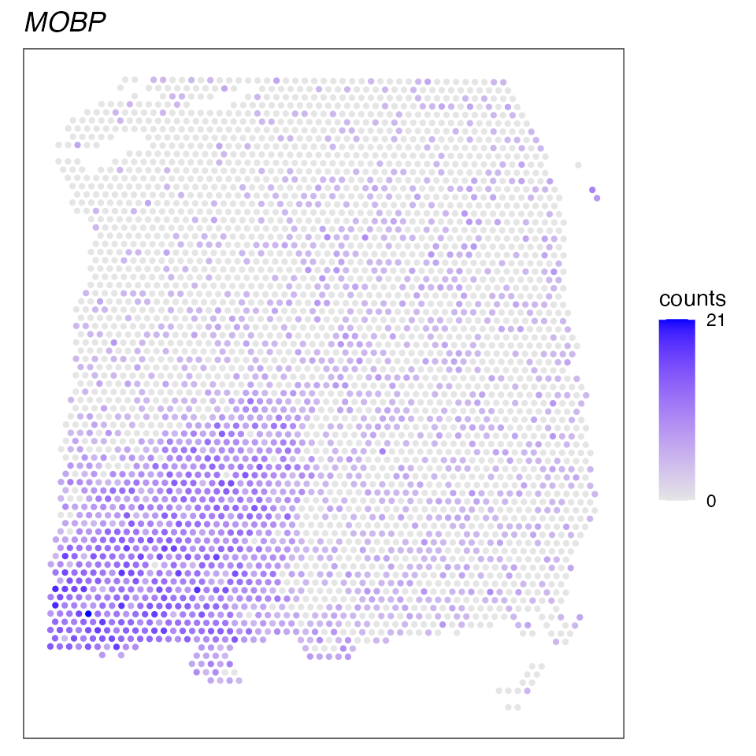
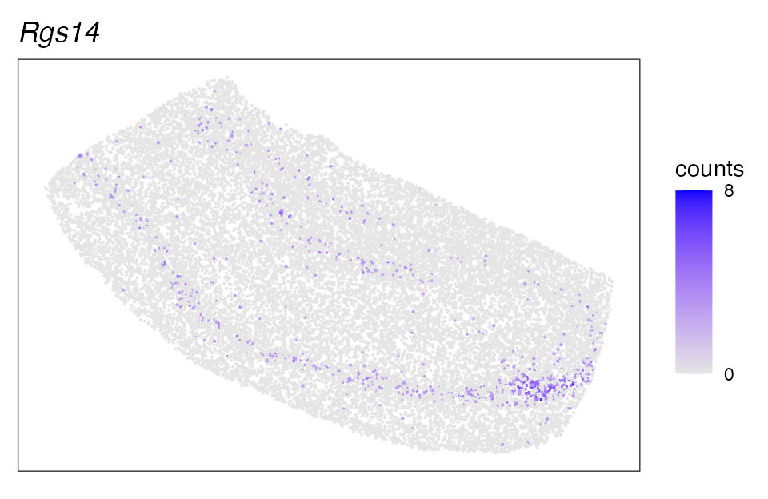

nnSVG tutorial
Lukas M. Weber
Johns Hopkins Bloomberg School of Public Health, Baltimore, MD, USAStephanie C. Hicks
Source:vignettes/nnSVG.Rmd
nnSVG.RmdIntroduction
nnSVG is a method for scalable identification of
spatially variable genes (SVGs) in spatially-resolved transcriptomics
data.
The nnSVG method is based on nearest-neighbor Gaussian
processes (Datta
et al., 2016, Finley
et al., 2019) and uses the BRISC algorithm (Saha
and Datta, 2018) for model fitting and parameter estimation.
nnSVG allows identification and ranking of SVGs with
flexible length scales across a tissue slide or within spatial domains
defined by covariates. The method scales linearly with the number of
spatial locations and can be applied to datasets containing thousands or
more spatial locations.
nnSVG is implemented as an R package within the
Bioconductor framework, and is available from Bioconductor.
More details describing the method are available in our preprint, available from bioRxiv.
Installation
The following code will install the latest release version of the
nnSVG package from Bioconductor. Additional details are
shown on the Bioconductor
page.
if (!requireNamespace("BiocManager", quietly = TRUE)) {
install.packages("BiocManager")
}
BiocManager::install("nnSVG")The latest development version can also be installed from the
devel version of Bioconductor or from GitHub.
Input data format
In the examples below, we assume the input data are provided as a SpatialExperiment
Bioconductor object. In this case, the outputs are stored in the
rowData of the SpatialExperiment object.
However, the inputs can also be provided as a numeric matrix of normalized and transformed counts (e.g. log-transformed normalized counts, also known as logcounts) and a numeric matrix of spatial coordinates.
To provide the inputs as numeric matrices, please install the
development version of the package from GitHub or the
devel version of Bioconductor (which will become the new
Bioconductor release version in October 2022).
Tutorial
Standard analysis
Run nnSVG
Here we show a short example demonstrating how to run
nnSVG.
For faster runtime in this example, we subsample the dataset and run
nnSVG on only a small number of genes. For a full analysis,
the subsampling step can be skipped.
# load example dataset from STexampleData package
spe <- Visium_humanDLPFC()
dim(spe)## [1] 33538 4992
# preprocessing steps
# keep only spots over tissue
spe <- spe[, colData(spe)$in_tissue == 1]
dim(spe)## [1] 33538 3639
# skip spot-level quality control, since this has been performed previously
# on this dataset
# filter low-expressed and mitochondrial genes
# using default filtering parameters
spe <- filter_genes(spe)## Gene filtering: removing mitochondrial genes## removed 13 mitochondrial genes## Gene filtering: retaining genes with at least 3 counts in at least 0.5% (n = 19) of spatial locations## removed 30216 out of 33525 genes due to low expression
# calculate logcounts (log-transformed normalized counts) using scran package
# using library size factors
spe <- computeLibraryFactors(spe)
spe <- logNormCounts(spe)
assayNames(spe)## [1] "counts" "logcounts"
# select small set of random genes and several known SVGs for
# faster runtime in this example
set.seed(123)
ix_random <- sample(seq_len(nrow(spe)), 10)
known_genes <- c("MOBP", "PCP4", "SNAP25", "HBB", "IGKC", "NPY")
ix_known <- which(rowData(spe)$gene_name %in% known_genes)
ix <- c(ix_known, ix_random)
spe <- spe[ix, ]
dim(spe)## [1] 16 3639
# run nnSVG
# set seed for reproducibility
set.seed(123)
# using a single thread in this example
spe <- nnSVG(spe)
# show results
rowData(spe)## DataFrame with 16 rows and 17 columns
## gene_id gene_name feature_type sigma.sq
## <character> <character> <character> <numeric>
## ENSG00000211592 ENSG00000211592 IGKC Gene Expression 0.565648
## ENSG00000168314 ENSG00000168314 MOBP Gene Expression 1.387394
## ENSG00000122585 ENSG00000122585 NPY Gene Expression 0.285674
## ENSG00000244734 ENSG00000244734 HBB Gene Expression 0.329421
## ENSG00000132639 ENSG00000132639 SNAP25 Gene Expression 0.430040
## ... ... ... ... ...
## ENSG00000130382 ENSG00000130382 MLLT1 Gene Expression 0.00978602
## ENSG00000036672 ENSG00000036672 USP2 Gene Expression 0.00307278
## ENSG00000086232 ENSG00000086232 EIF2AK1 Gene Expression 0.00315783
## ENSG00000106278 ENSG00000106278 PTPRZ1 Gene Expression 0.00279872
## ENSG00000133606 ENSG00000133606 MKRN1 Gene Expression 0.00632248
## tau.sq phi loglik runtime mean var
## <numeric> <numeric> <numeric> <numeric> <numeric> <numeric>
## ENSG00000211592 0.455042 20.10702 -4531.64 0.797 0.622937 1.007454
## ENSG00000168314 0.364188 1.10202 -3663.60 0.479 0.805525 1.205673
## ENSG00000122585 0.280173 71.65329 -3995.23 0.673 0.393975 0.567383
## ENSG00000244734 0.353754 27.81410 -4044.96 1.052 0.411262 0.697673
## ENSG00000132639 0.430106 3.03385 -3912.70 0.387 3.451926 0.857922
## ... ... ... ... ... ... ...
## ENSG00000130382 0.283114 50.989372 -2927.61 0.501 0.298698 0.292976
## ENSG00000036672 0.241105 12.538347 -2597.00 0.346 0.248384 0.244218
## ENSG00000086232 0.266973 25.929905 -2781.47 0.344 0.275193 0.270208
## ENSG00000106278 0.367893 9.529272 -3357.32 0.409 0.352159 0.370784
## ENSG00000133606 0.272432 0.082764 -2831.51 0.468 0.295404 0.278806
## spcov prop_sv loglik_lm LR_stat rank pval
## <numeric> <numeric> <numeric> <numeric> <numeric> <numeric>
## ENSG00000211592 1.207340 0.554182 -5176.53 1289.775 3 0
## ENSG00000168314 1.462248 0.792080 -5503.33 3679.464 1 0
## ENSG00000122585 1.356646 0.504861 -4131.87 273.278 6 0
## ENSG00000244734 1.395587 0.482191 -4507.99 926.046 4 0
## ENSG00000132639 0.189973 0.499961 -4884.19 1942.986 2 0
## ... ... ... ... ... ... ...
## ENSG00000130382 0.331185 0.0334107 -2929.28 3.35215 12 0.187106834
## ENSG00000036672 0.223173 0.0125842 -2598.08 2.15483 13 0.340473918
## ENSG00000086232 0.204201 0.0116900 -2782.09 1.23716 14 0.538708713
## ENSG00000106278 0.150225 0.0075500 -3357.83 1.01109 15 0.603176706
## ENSG00000133606 0.269171 0.0226812 -2839.08 15.15227 9 0.000512539
## padj
## <numeric>
## ENSG00000211592 0
## ENSG00000168314 0
## ENSG00000122585 0
## ENSG00000244734 0
## ENSG00000132639 0
## ... ...
## ENSG00000130382 0.249475778
## ENSG00000036672 0.419044822
## ENSG00000086232 0.615667101
## ENSG00000106278 0.643388487
## ENSG00000133606 0.000911181Investigate results
The results are stored in the rowData of the
SpatialExperiment object.
The main results of interest are:
-
LR_stat: likelihood ratio (LR) statistics -
rank: rank of top SVGs according to LR statistics -
pval: p-values from asymptotic chi-squared distribution with 2 degrees of freedom -
padj: p-values adjusted for multiple testing, which can be used to define a cutoff for statistically significant SVGs (e.g.padj<= 0.05) -
prop_sv: effect size, defined as proportion of spatial variance out of total variance
# number of significant SVGs
table(rowData(spe)$padj <= 0.05)##
## FALSE TRUE
## 7 9
# show results for top n SVGs
rowData(spe)[order(rowData(spe)$rank)[1:10], ]## DataFrame with 10 rows and 17 columns
## gene_id gene_name feature_type sigma.sq
## <character> <character> <character> <numeric>
## ENSG00000168314 ENSG00000168314 MOBP Gene Expression 1.38739383
## ENSG00000132639 ENSG00000132639 SNAP25 Gene Expression 0.43003959
## ENSG00000211592 ENSG00000211592 IGKC Gene Expression 0.56564845
## ENSG00000244734 ENSG00000244734 HBB Gene Expression 0.32942113
## ENSG00000183036 ENSG00000183036 PCP4 Gene Expression 0.23102220
## ENSG00000122585 ENSG00000122585 NPY Gene Expression 0.28567359
## ENSG00000129562 ENSG00000129562 DAD1 Gene Expression 0.02389607
## ENSG00000114923 ENSG00000114923 SLC4A3 Gene Expression 0.01147170
## ENSG00000133606 ENSG00000133606 MKRN1 Gene Expression 0.00632248
## ENSG00000143543 ENSG00000143543 JTB Gene Expression 0.07541566
## tau.sq phi loglik runtime mean var
## <numeric> <numeric> <numeric> <numeric> <numeric> <numeric>
## ENSG00000168314 0.364188 1.102018 -3663.60 0.479 0.805525 1.205673
## ENSG00000132639 0.430106 3.033847 -3912.70 0.387 3.451926 0.857922
## ENSG00000211592 0.455042 20.107022 -4531.64 0.797 0.622937 1.007454
## ENSG00000244734 0.353754 27.814098 -4044.96 1.052 0.411262 0.697673
## ENSG00000183036 0.452735 8.272278 -4026.22 0.328 0.687961 0.684598
## ENSG00000122585 0.280173 71.653290 -3995.23 0.673 0.393975 0.567383
## ENSG00000129562 0.464723 10.141894 -3842.24 0.440 0.549318 0.489167
## ENSG00000114923 0.237260 12.765645 -2617.36 0.501 0.250768 0.248816
## ENSG00000133606 0.272432 0.082764 -2831.51 0.468 0.295404 0.278806
## ENSG00000143543 0.463623 119.721419 -4036.28 0.561 0.654919 0.539172
## spcov prop_sv loglik_lm LR_stat rank pval
## <numeric> <numeric> <numeric> <numeric> <numeric> <numeric>
## ENSG00000168314 1.462248 0.7920804 -5503.33 3679.46397 1 0.00000e+00
## ENSG00000132639 0.189973 0.4999614 -4884.19 1942.98556 2 0.00000e+00
## ENSG00000211592 1.207340 0.5541822 -5176.53 1289.77508 3 0.00000e+00
## ENSG00000244734 1.395587 0.4821910 -4507.99 926.04573 4 0.00000e+00
## ENSG00000183036 0.698656 0.3378716 -4473.57 894.68884 5 0.00000e+00
## ENSG00000122585 1.356646 0.5048609 -4131.87 273.27818 6 0.00000e+00
## ENSG00000129562 0.281410 0.0489053 -3861.98 39.49098 7 2.65854e-09
## ENSG00000114923 0.427112 0.0461207 -2632.02 29.31376 8 4.31119e-07
## ENSG00000133606 0.269171 0.0226812 -2839.08 15.15227 9 5.12539e-04
## ENSG00000143543 0.419318 0.1399077 -4039.07 5.59664 10 6.09124e-02
## padj
## <numeric>
## ENSG00000168314 0.00000e+00
## ENSG00000132639 0.00000e+00
## ENSG00000211592 0.00000e+00
## ENSG00000244734 0.00000e+00
## ENSG00000183036 0.00000e+00
## ENSG00000122585 0.00000e+00
## ENSG00000129562 6.07667e-09
## ENSG00000114923 8.62238e-07
## ENSG00000133606 9.11181e-04
## ENSG00000143543 9.74599e-02
# plot spatial expression of top-ranked SVG
ix <- which(rowData(spe)$rank == 1)
ix_name <- rowData(spe)$gene_name[ix]
ix_name## [1] "MOBP"
df <- as.data.frame(
cbind(spatialCoords(spe),
expr = counts(spe)[ix, ]))
ggplot(df, aes(x = pxl_col_in_fullres, y = pxl_row_in_fullres, color = expr)) +
geom_point(size = 0.8) +
coord_fixed() +
scale_y_reverse() +
scale_color_gradient(low = "gray90", high = "blue",
trans = "sqrt", breaks = range(df$expr),
name = "counts") +
ggtitle(ix_name) +
theme_bw() +
theme(plot.title = element_text(face = "italic"),
panel.grid = element_blank(),
axis.title = element_blank(),
axis.text = element_blank(),
axis.ticks = element_blank())
With covariates
Run nnSVG
nnSVG can also be run on datasets with known covariates,
such as spatial domains or cell types. In this case, the method will
identify SVGs within regions defined by the selected covariates,
e.g. within spatial domains.
Here we run a short example demonstrating this functionality.
As above, for faster runtime in this example, we subsample a very small subset of the data. For a full analysis, the subsampling step can be skipped.
# load example dataset from STexampleData package
spe <- SlideSeqV2_mouseHPC()
dim(spe)## [1] 23264 53208
# preprocessing steps
# remove spots with NA cell type labels
spe <- spe[, !is.na(colData(spe)$celltype)]
dim(spe)## [1] 23264 15003
# check cell type labels
table(colData(spe)$celltype)##
## Astrocyte CA1 CA3
## 6688 1320 1729
## Cajal_Retzius Choroid Denate
## 60 21 1713
## Endothelial_Stalk Endothelial_Tip Entorihinal
## 96 118 111
## Ependymal Interneuron Microglia_Macrophages
## 94 730 299
## Mural Neurogenesis Neuron.Slc17a6
## 26 47 44
## Oligodendrocyte Polydendrocyte
## 1793 114
# filter low-expressed and mitochondrial genes
# using adjusted filtering parameters for this platform
spe <- filter_genes(
spe,
filter_genes_ncounts = 1,
filter_genes_pcspots = 1,
filter_mito = TRUE
)## Gene filtering: removing mitochondrial genes## removed 25 mitochondrial genes## Gene filtering: retaining genes with at least 1 counts in at least 1% (n = 151) of spatial locations## removed 14356 out of 23239 genes due to low expression
dim(spe)## [1] 8883 15003
# calculate log-transformed normalized counts using scran package
# using library size normalization
spe <- computeLibraryFactors(spe)
spe <- logNormCounts(spe)
assayNames(spe)## [1] "counts" "logcounts"
# select small set of random genes and several known SVGs for
# faster runtime in this example
set.seed(123)
ix_random <- sample(seq_len(nrow(spe)), 10)
known_genes <- c("Cpne9", "Rgs14")
ix_known <- which(rowData(spe)$gene_name %in% known_genes)
ix <- c(ix_known, ix_random)
spe <- spe[ix, ]
dim(spe)## [1] 12 15003
# run nnSVG with covariates
# create model matrix for cell type labels
X <- model.matrix(~ colData(spe)$celltype)
dim(X)## [1] 15003 17
stopifnot(nrow(X) == ncol(spe))
# set seed for reproducibility
set.seed(123)
# using a single thread in this example
spe <- nnSVG(spe, X = X)
# show results
rowData(spe)## DataFrame with 12 rows and 15 columns
## gene_name sigma.sq tau.sq phi loglik runtime
## <character> <numeric> <numeric> <numeric> <numeric> <numeric>
## Cpne9 Cpne9 6.91471e-04 0.0275984 1.28482e+01 5484.78 6.340
## Rgs14 Rgs14 2.77031e-03 0.0452681 5.63703e-09 1650.39 6.642
## Eogt Eogt 8.52204e-05 0.0198481 7.81785e+01 8083.08 3.645
## Ergic1 Ergic1 2.54388e-04 0.0465677 9.77253e+01 1677.16 3.392
## Zfp330 Zfp330 1.21718e-04 0.0266163 1.54152e+02 5879.76 3.114
## ... ... ... ... ... ... ...
## Hdac11 Hdac11 3.54441e-03 0.1648232 145.3093 -7920.47 4.820
## Nab2 Nab2 3.99617e-05 0.0145549 67.5432 10421.32 3.641
## Senp3 Senp3 7.97637e-05 0.0253771 36.8069 6248.29 4.334
## Fbxo6 Fbxo6 9.53684e-05 0.0253767 168.3933 6243.54 3.378
## Ntng1 Ntng1 2.39135e-03 0.0433036 24.1537 1951.83 4.511
## mean var spcov prop_sv loglik_lm LR_stat rank
## <numeric> <numeric> <numeric> <numeric> <numeric> <numeric> <numeric>
## Cpne9 0.0194924 0.0283971 1.349029 0.02444238 5455.66 58.23907 3
## Rgs14 0.0360053 0.0485672 1.461833 0.05766871 1515.16 270.46145 1
## Eogt 0.0125243 0.0200072 0.737087 0.00427527 8082.32 1.52759 6
## Ergic1 0.0359343 0.0471421 0.443853 0.00543307 1676.61 1.10864 8
## Zfp330 0.0201203 0.0267799 0.548331 0.00455225 5879.05 1.42305 7
## ... ... ... ... ... ... ... ...
## Hdac11 0.1258726 0.1705333 0.472978 0.02105161 -7923.51 6.072532 4
## Nab2 0.0120832 0.0146742 0.523166 0.00273807 10421.82 -1.016772 12
## Senp3 0.0199706 0.0255396 0.447210 0.00313329 6248.60 -0.631569 11
## Fbxo6 0.0188249 0.0255584 0.518764 0.00374404 6243.59 -0.103406 10
## Ntng1 0.0341843 0.0466474 1.430523 0.05233293 1854.40 194.856131 2
## pval padj
## <numeric> <numeric>
## Cpne9 2.25708e-13 9.02833e-13
## Rgs14 0.00000e+00 0.00000e+00
## Eogt 4.65894e-01 8.41534e-01
## Ergic1 5.74463e-01 8.61695e-01
## Zfp330 4.90895e-01 8.41534e-01
## ... ... ...
## Hdac11 0.0480139 0.144042
## Nab2 1.0000000 1.000000
## Senp3 1.0000000 1.000000
## Fbxo6 1.0000000 1.000000
## Ntng1 0.0000000 0.000000Note that if there are any empty levels in the factor used to create the design matrix, these can be removed as follows:
# create model matrix after dropping empty factor levels
X <- model.matrix(~ droplevels(as.factor(colData(spe)$celltype)))Investigate results
# number of significant SVGs
table(rowData(spe)$padj <= 0.05)##
## FALSE TRUE
## 9 3
# show results for top n SVGs
rowData(spe)[order(rowData(spe)$rank)[1:10], ]## DataFrame with 10 rows and 15 columns
## gene_name sigma.sq tau.sq phi loglik runtime
## <character> <numeric> <numeric> <numeric> <numeric> <numeric>
## Rgs14 Rgs14 2.77031e-03 0.0452681 5.63703e-09 1650.39 6.642
## Ntng1 Ntng1 2.39135e-03 0.0433036 2.41537e+01 1951.83 4.511
## Cpne9 Cpne9 6.91471e-04 0.0275984 1.28482e+01 5484.78 6.340
## Hdac11 Hdac11 3.54441e-03 0.1648232 1.45309e+02 -7920.47 4.820
## Cul1 Cul1 4.19373e-04 0.0688365 9.03130e+01 -1259.18 4.016
## Eogt Eogt 8.52204e-05 0.0198481 7.81785e+01 8083.08 3.645
## Zfp330 Zfp330 1.21718e-04 0.0266163 1.54152e+02 5879.76 3.114
## Ergic1 Ergic1 2.54388e-04 0.0465677 9.77253e+01 1677.16 3.392
## Gclc Gclc 1.22209e-04 0.0345001 1.19975e+02 3941.26 3.442
## Fbxo6 Fbxo6 9.53684e-05 0.0253767 1.68393e+02 6243.54 3.378
## mean var spcov prop_sv loglik_lm LR_stat rank
## <numeric> <numeric> <numeric> <numeric> <numeric> <numeric> <numeric>
## Rgs14 0.0360053 0.0485672 1.461833 0.05766871 1515.16 270.4614466 1
## Ntng1 0.0341843 0.0466474 1.430523 0.05233293 1854.40 194.8561307 2
## Cpne9 0.0194924 0.0283971 1.349029 0.02444238 5455.66 58.2390704 3
## Hdac11 0.1258726 0.1705333 0.472978 0.02105161 -7923.51 6.0725315 4
## Cul1 0.0548957 0.0696223 0.373046 0.00605541 -1260.02 1.6933353 5
## Eogt 0.0125243 0.0200072 0.737087 0.00427527 8082.32 1.5275946 6
## Zfp330 0.0201203 0.0267799 0.548331 0.00455225 5879.05 1.4230514 7
## Ergic1 0.0359343 0.0471421 0.443853 0.00543307 1676.61 1.1086391 8
## Gclc 0.0256188 0.0347265 0.431512 0.00352977 3941.30 -0.0749123 9
## Fbxo6 0.0188249 0.0255584 0.518764 0.00374404 6243.59 -0.1034062 10
## pval padj
## <numeric> <numeric>
## Rgs14 0.00000e+00 0.00000e+00
## Ntng1 0.00000e+00 0.00000e+00
## Cpne9 2.25708e-13 9.02833e-13
## Hdac11 4.80139e-02 1.44042e-01
## Cul1 4.28842e-01 8.41534e-01
## Eogt 4.65894e-01 8.41534e-01
## Zfp330 4.90895e-01 8.41534e-01
## Ergic1 5.74463e-01 8.61695e-01
## Gclc 1.00000e+00 1.00000e+00
## Fbxo6 1.00000e+00 1.00000e+00
# plot spatial expression of top-ranked SVG
ix <- which(rowData(spe)$rank == 1)
ix_name <- rowData(spe)$gene_name[ix]
ix_name## [1] "Rgs14"
df <- as.data.frame(
cbind(spatialCoords(spe),
expr = counts(spe)[ix, ]))
ggplot(df, aes(x = xcoord, y = ycoord, color = expr)) +
geom_point(size = 0.1) +
coord_fixed() +
scale_color_gradient(low = "gray90", high = "blue",
trans = "sqrt", breaks = range(df$expr),
name = "counts") +
ggtitle(ix_name) +
theme_bw() +
theme(plot.title = element_text(face = "italic"),
panel.grid = element_blank(),
axis.title = element_blank(),
axis.text = element_blank(),
axis.ticks = element_blank())
Session information
## R version 4.2.0 beta (2022-04-11 r82151)
## Platform: x86_64-apple-darwin17.0 (64-bit)
## Running under: macOS Big Sur/Monterey 10.16
##
## Matrix products: default
## BLAS: /Library/Frameworks/R.framework/Versions/4.2/Resources/lib/libRblas.0.dylib
## LAPACK: /Library/Frameworks/R.framework/Versions/4.2/Resources/lib/libRlapack.dylib
##
## locale:
## [1] en_US.UTF-8/en_US.UTF-8/en_US.UTF-8/C/en_US.UTF-8/en_US.UTF-8
##
## attached base packages:
## [1] stats4 stats graphics grDevices utils datasets methods
## [8] base
##
## other attached packages:
## [1] ggplot2_3.3.6 nnSVG_1.1.13
## [3] scran_1.23.1 scuttle_1.5.1
## [5] STexampleData_1.4.5 ExperimentHub_2.3.7
## [7] AnnotationHub_3.3.11 BiocFileCache_2.3.4
## [9] dbplyr_2.1.1 SpatialExperiment_1.5.4
## [11] SingleCellExperiment_1.17.2 SummarizedExperiment_1.25.3
## [13] Biobase_2.55.2 GenomicRanges_1.47.6
## [15] GenomeInfoDb_1.31.7 IRanges_2.29.1
## [17] S4Vectors_0.33.17 BiocGenerics_0.41.2
## [19] MatrixGenerics_1.7.0 matrixStats_0.61.0
## [21] BiocStyle_2.24.0
##
## loaded via a namespace (and not attached):
## [1] systemfonts_1.0.4 igraph_1.3.0
## [3] BiocParallel_1.29.20 digest_0.6.29
## [5] htmltools_0.5.2 magick_2.7.3
## [7] fansi_1.0.3 magrittr_2.0.3
## [9] memoise_2.0.1 ScaledMatrix_1.3.0
## [11] cluster_2.1.3 limma_3.51.7
## [13] Biostrings_2.63.3 rdist_0.0.5
## [15] R.utils_2.11.0 pkgdown_2.0.6
## [17] colorspace_2.0-3 blob_1.2.3
## [19] rappdirs_0.3.3 textshaping_0.3.6
## [21] xfun_0.30 dplyr_1.0.8
## [23] crayon_1.5.1 RCurl_1.98-1.6
## [25] jsonlite_1.8.0 glue_1.6.2
## [27] gtable_0.3.0 zlibbioc_1.41.0
## [29] XVector_0.35.0 DelayedArray_0.21.2
## [31] BiocSingular_1.11.0 DropletUtils_1.15.2
## [33] Rhdf5lib_1.17.3 HDF5Array_1.23.2
## [35] scales_1.1.1 DBI_1.1.2
## [37] edgeR_3.37.1 Rcpp_1.0.8.3
## [39] xtable_1.8-4 dqrng_0.3.0
## [41] bit_4.0.4 rsvd_1.0.5
## [43] metapod_1.3.0 httr_1.4.2
## [45] ellipsis_0.3.2 farver_2.1.0
## [47] pkgconfig_2.0.3 R.methodsS3_1.8.1
## [49] sass_0.4.1 locfit_1.5-9.5
## [51] utf8_1.2.2 labeling_0.4.2
## [53] tidyselect_1.1.2 rlang_1.0.4
## [55] later_1.3.0 AnnotationDbi_1.57.1
## [57] munsell_0.5.0 BiocVersion_3.15.2
## [59] tools_4.2.0 cachem_1.0.6
## [61] cli_3.2.0 generics_0.1.2
## [63] RSQLite_2.2.12 evaluate_0.15
## [65] stringr_1.4.0 fastmap_1.1.0
## [67] yaml_2.3.5 ragg_1.2.4
## [69] knitr_1.38 bit64_4.0.5
## [71] fs_1.5.2 purrr_0.3.4.9000
## [73] RANN_2.6.1 KEGGREST_1.35.0
## [75] pbapply_1.5-0 sparseMatrixStats_1.7.0
## [77] mime_0.12 BRISC_1.0.5
## [79] R.oo_1.24.0 compiler_4.2.0
## [81] rstudioapi_0.13 filelock_1.0.2
## [83] curl_4.3.2 png_0.1-7
## [85] interactiveDisplayBase_1.33.0 tibble_3.1.8
## [87] statmod_1.4.36 bslib_0.3.1
## [89] stringi_1.7.6 highr_0.9
## [91] desc_1.4.1 lattice_0.20-45
## [93] bluster_1.5.1 Matrix_1.4-1
## [95] vctrs_0.4.1 pillar_1.7.0
## [97] lifecycle_1.0.1 rhdf5filters_1.7.0
## [99] BiocManager_1.30.16 jquerylib_0.1.4
## [101] BiocNeighbors_1.13.0 bitops_1.0-7
## [103] irlba_2.3.5 httpuv_1.6.5
## [105] R6_2.5.1 bookdown_0.30
## [107] promises_1.2.0.1 assertthat_0.2.1
## [109] rhdf5_2.39.6 rprojroot_2.0.3
## [111] rjson_0.2.21 withr_2.5.0
## [113] GenomeInfoDbData_1.2.7 parallel_4.2.0
## [115] grid_4.2.0 beachmat_2.11.0
## [117] rmarkdown_2.14 DelayedMatrixStats_1.17.0
## [119] shiny_1.7.1